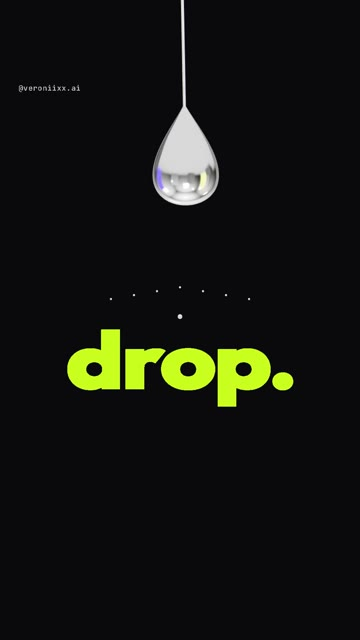
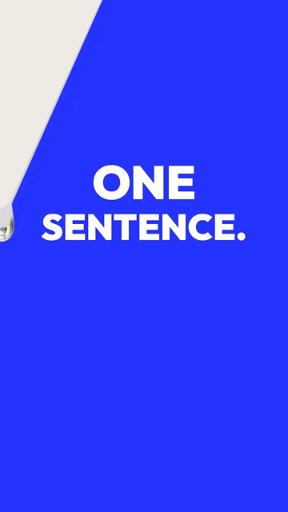
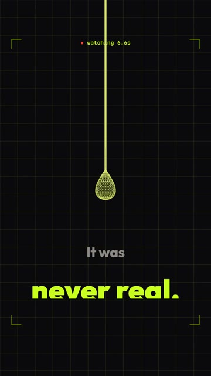
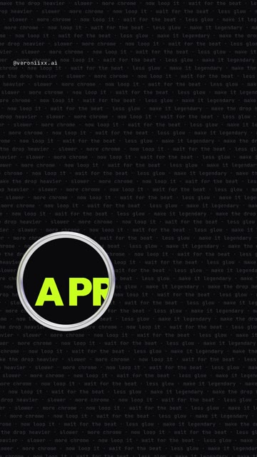
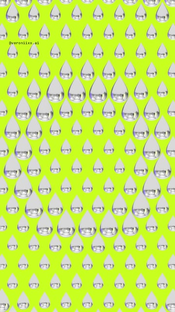

How I made a 20-second showreel where one drop of liquid chrome does everything: it falls, swings like a pendulum and wipes the words, turns into a wireframe, a lens, 180 drops in a spiral and my handle. Then it loops. No camera, no editing app. The full brief, ready to paste. Windows and Mac.





A fast, loud showreel with one hero: a chrome drop in real 3D. Every scene change happens through it, so the eye never gets lost. Claude writes the 3D scene, the motion, the timing and even the music. You write the words.
Chrome has no color of its own. It only shows what it reflects. So the scene gets an invisible “studio” built from code: two tall light panels, lime and blue, over a dark floor. The drop reflects them, and that is why it looks expensive and not like grey plastic.
Windows Press Win, type PowerShell, open it.
Mac Press Cmd + Space, type Terminal, open it.
Windows Paste one line at a time. Answer Y when asked.
winget install -e --id OpenJS.NodeJS.LTS winget install -e --id Git.Git winget install -e --id Python.Python.3.13 winget install -e --id Gyan.FFmpeg
Mac Homebrew first, it will ask for your password. At the end it prints two lines under “Next steps”: run them, then run the second command.
/bin/bash -c "$(curl -fsSL https://raw.githubusercontent.com/Homebrew/install/HEAD/install.sh)"
brew install node git python ffmpeg
npm install -g @anthropic-ai/claude-code
Prefer an app to a terminal? Install Claude from claude.ai/download, it has a Code tab that does the same thing.
mkdir drop-reel\ncd drop-reel\nclaude
Set up a 3D motion project in this folder. 1. Install Remotion (React 18 + TypeScript) with @remotion/three, three and @react-three/fiber. 2. Check that Python has numpy, scipy, soundfile and pyloudnorm. Install what is missing. 3. Check that ffmpeg works from the terminal. 4. Build a test composition, 1080x1920, 30 fps: one chrome sphere in three.js (metalness 1, roughness 0.03) lit by an environment map, on a dark background. Render one frame to PNG with the GL backend set to "angle" and show me the path. If something is missing, install it yourself and tell me what you installed. If something fails, find the cause and fix it.
Words in square brackets are mine: put your own. Keep them short, one word or phrase per beat.
Build a vertical showreel in three.js inside Remotion. 1080x1920, 20 seconds, 30 fps for drafts and 60 fps for the final, a seamless loop. All text in English. Keep text out of the top 220 px and the bottom 380 px (the Instagram interface). THE HERO One drop of liquid chrome. It makes every transition in the reel, nothing changes without it. - Shape: a lathe geometry (a sphere pulled into a teardrop). Material: metalness 1, roughness 0.03. - Chrome is only as good as what it reflects. Build an environment from code: two tall light panels, one lime #C8FF1E and one blue #2433FF, a dark floor, and use it as the env map. ACES tone mapping. THE TIMELINE (150 BPM: one beat = 12 frames at 30 fps; every event lands on a beat) 1. HOOK (0-1.2 s). Words one per beat: [wait] / [for] / [the] / [drop.] The background changes on every word. A tiny droplet falls off the drop and splashes on each word. 2. PENDULUM (1.2-4.8 s). The drop falls, hits, white flash. Then it swings on a thin thread like a pendulum. Each swing wipes the old phrase with the thread and writes the answer, each answer on its own color page: [WHO FILMED THIS?] -> [NOBODY.] (lime) / [WHO EDITED IT?] -> [ONE SENTENCE.] (blue) / [HOW LONG?] -> [ONE COFFEE.] (pink #FF3D7F) At the edge of every swing the drop hangs for about 11 frames, so the phrase can be read. 3. SECOND HOOK (4.8-7.4 s). A small recording dot and a counter: "● watching 5.3s". Then: "You just watched a drop for 5.3 seconds." The chrome drop turns into a lime wireframe: "It was never real. just code + claude". 4. LENS (7.4-9.4 s). The wireframe flattens into a chrome lens. It slides over a page of small text, and under it big words appear: [EVERY FRAME IS A PROMPT.] 5. MONTAGE (9.4-11.8 s). The word [drop.] stays still in the middle. Under it, shots of chrome change fast: a wobbling blob, chrome balls, a knot, a splash crown, a ripple. Shots start at 6 frames and get shorter, down to 3. 6. GRID (11.8-14.2 s). 180 chrome drops in a grid on lime (one InstancedMesh). Two waves run through them, then they spin into a spiral and dive into the center. 7. CHAT (14.2-15.7 s). Two chat bubbles. client: "[can you make my brand look expensive?]" me: "wait for the drop." 8. BUILD (15.7-17.9 s). Hundreds of droplets fly together into my handle [@yourhandle] in 3D, the camera circles it, then it melts back into one drop. 9. END (17.9-19.5 s). "Want the prompt for this drop?" A comment field types [DROP] letter by letter. "it's in my bio". 10. LOOP. The drop drips once more, and the light background of the first frame spreads from the splash. The last frame must match the first frame. ENERGY A short punch zoom on every event and a white flash on the big ones (the hit, the wireframe, the lens, the chat, the build). It must feel fast, like a reel you cannot scroll past. TEXT Heavy grotesk font. No blur and no shake on text: words appear with opacity or a hard cut only. Phrases must stay short enough that the drop never covers them at the edge of a swing. SOUND (synthesize in numpy, no samples) Liquid trap in F minor, 150 BPM: an 808 with glide, hi-hats in 16ths with rolls, a melody made of "drop" sounds (short sine pings). A sound on every event: a drip on each word, a big hit on the fall, a whoosh on every swing, a ticking counter, digital crackle on the wireframe, clicks on the lens, glitches on the montage cuts, bubbles on the grid, message pops in the chat, key clicks on DROP. Loop the tails into the start. Master to -14 LUFS, peak below -1 dBTP. CHECK BEFORE YOU SAY DONE 1. Render a draft at 540x960, 30 fps, no sound, so I can check the motion first. 2. Render a contact sheet of 40+ frames and a zoomed still of every phrase. 3. Check: no phrase is cut off or covered by the drop, nothing sits in the interface zones, every scene ends before the next one starts. 4. Compare the first and the last frame: the loop must not jump. 5. Then the final: 60 fps with sound. Tell me what you checked and what I should watch for in motion.
Watch the draft on your phone. Then send notes like these. The first two are almost word for word what I wrote after my first and second versions.
It feels slow. This is a showreel: make it twice as fast, change the background on every beat and add a punch zoom on every event.
It is too short. Make it 20 seconds and add more hooks: a counter of how long I have been watching, a wireframe reveal, a chat joke.
At the edge of the swing the drop covers the end of the phrase. Make the phrases narrower or move the swing so the text is always readable.
The montage does not end and covers the grid. Every scene must end before the next one starts. Check the frame where they meet.
The chrome looks like grey plastic. Chrome needs something to reflect: make the light panels in the environment brighter and add more contrast between them and the floor.
Replace the words with mine: [your hook], [your three questions and answers], [your handle], [your code word]. Keep one word or phrase per beat.
Yes. Change the words and the colors of the pages. The drop can carry anything: your logo in the build scene, your product name in the montage.
No. You need to know what you want to see and say it clearly. Claude builds the drop, the scene and the music from code.
Copy it and paste it to Claude with the words “here is the error, fix it and continue”.